555 77 88 77
საქართველოო ლამაზო, „სხვა საქართველო სად არი?"
უფლის ხატივით მირონცხებული, ჩემი კახეთი!..
ალავერდი

იყალთო
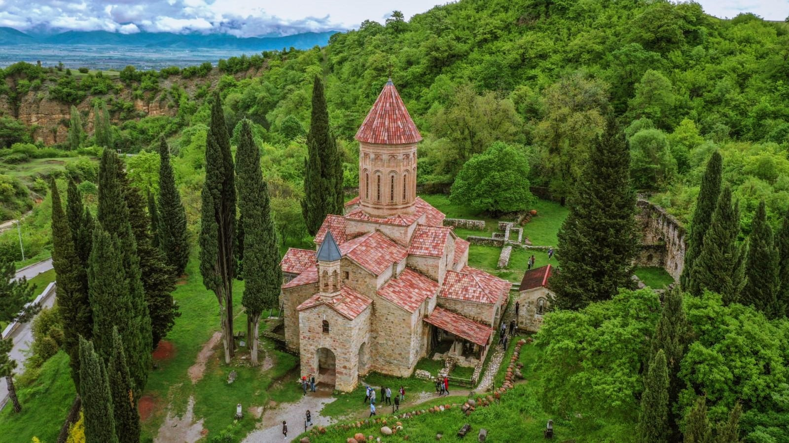ნეკრესი

ყვარლის ტბა

ლოპოტა
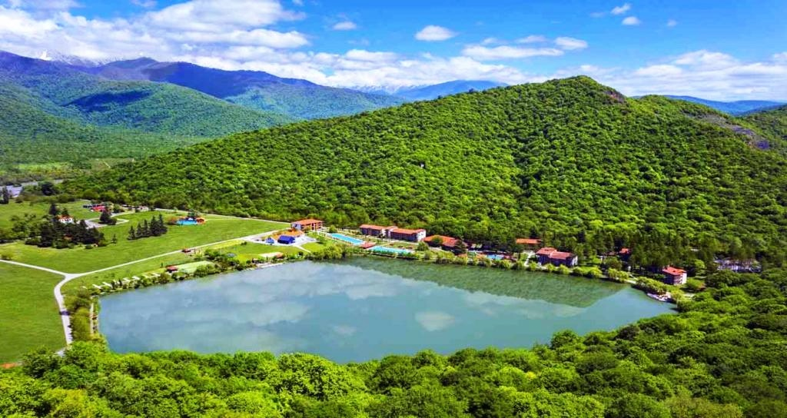ადგილი, სადაც დრო ჩერდება! კავკასიის მთებით გარშემორტყმული ლოპოტას ხეობა იდეალური ადგილია მათთვის, ვინც კომფორტულ დასვენებასა და თავგადასავლებს ეძებს. თბილისიდან ორი საათის გზაზე, კახეთის ისტორიულ რეგიონში თქვენ გელოდებათ ლოპოტა სპა რეზორტი.
ამბასადორი
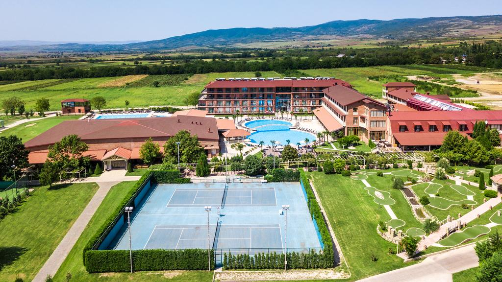ამბასადორი-კაჭრეთი. იგი დედაქალაქ თბილისის საერთაშორისო აეროპორტიდან სულ რაღაც 75 კმ-ის დაშორებით მდებარეობს. განსაკუთრებით აღსანიშნავი კი გოლფის მოედანი, დიდი ჩოგბურთის კორტები, მაგიდის ჩოგბურთი, სავარჯიშო დარბაზი, ბილიარდის მაგიდები და ღია საცურაო აუზია.
თუ ყველაფერი არის სიზმარი,
თუ ბინდის ფერი არის ყოველი,
მაშინ რატომ დგას დღეს მცხეთის ჯვარი,
რატომ დგას ისევ სვეტიცხოველი?
სვეტიცხოვლის ტაძარი
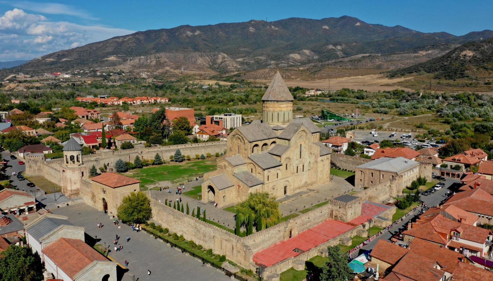სვეტიცხოველი - ქართული კულტურის, ხელოვნებისა და არქიტექტურის უმნიშვნელოვანესი ძეგლი გამოირჩევა არა მხოლოდ თავისი მხატვრული ღირსებით, დიდებულებით და ჰარმონიულობით, არამედ იმ განსაკუთრებული როლითაც, რომელიც მან ქართველი ერის ისტორიაში შეასრულა.
ჯვრის მონასტერი
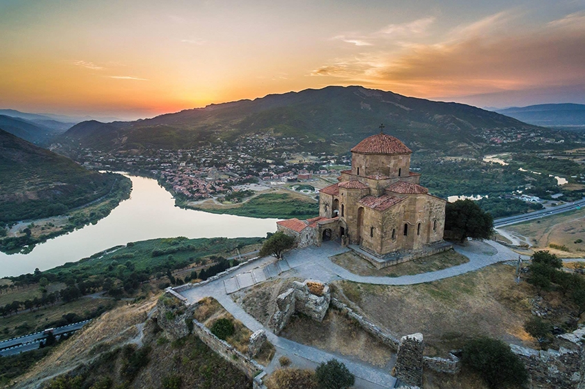მცხეთის ჯვარი ქართული ეროვნული ხუროთმოძღვრების განვითარების მწვერვალია. მიუხედავად იმისა, რომ ეს ტაძარი მცირე ზომისაა, იგი თავის გრანდიოზულობით მაინც აოცებს მნახველებს. აღსანიშნავია ტაძრის მდებარეობა, ეს ადგილი წარმოადგენს მტკვრისა და არაგვის შესაყარს. თუ დავუკვირდებით ეს ადგილი წარმოგვიდგება საქართველოს თითქმის ყველა კუთხის შეყრის ადგილად – სამხრეთ-დასავლეთიდან მდინარე მტკვარის და ჩრდილო-აღმოსავლეთიდან მდინარე არაგვი.
დედათა მონასტერი
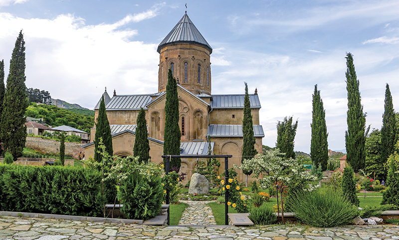სამთავროს წმიდა ნინოს დედათა მონასტერი მდებარეობს საქართველოს უძველეს ქალაქში – მცხეთაში, რომელიც V ს. საქართველოს დედაქალაქი იყო. ამ წმიდა ადგილიდან უქადაგა ქართველ ერს ქრისტეს სჯული მოციქულთასწორმა, კაპადოკიელმა ნეტარმა ქალწულმა ნინომ, სამთავროშივე აიდგა ფეხი ქართულმა ქრისტიანულმა მრწამსმა და თვითშეგნებამ, აქედან მოეფინა ნათელი სრულიად საქართველოს.
ვაგრძელებთ მოგზაურობას საქართველოში
გერგეთის სამება

მარტვილის კანიონი
დაშბაშის კანიონი
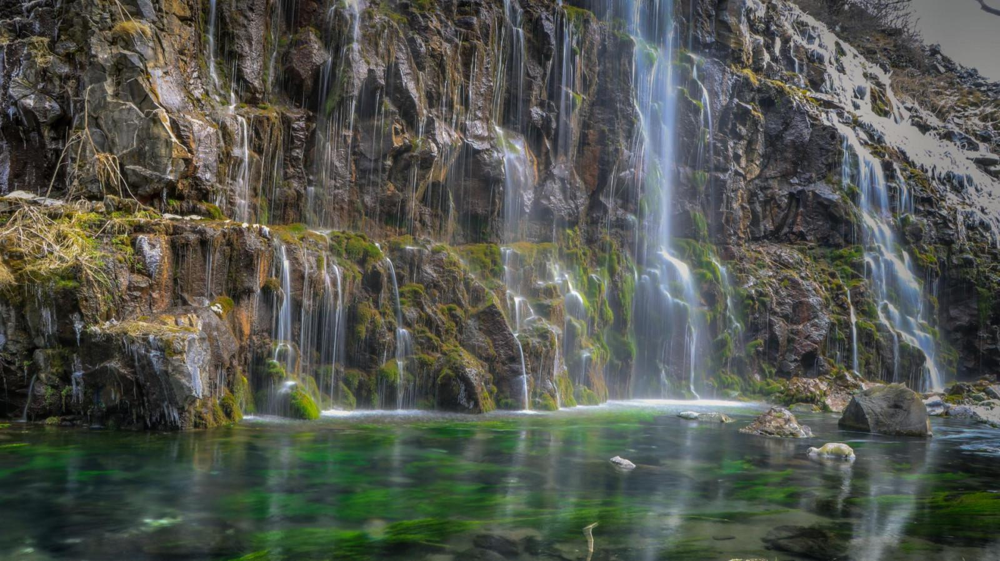dfdsfds
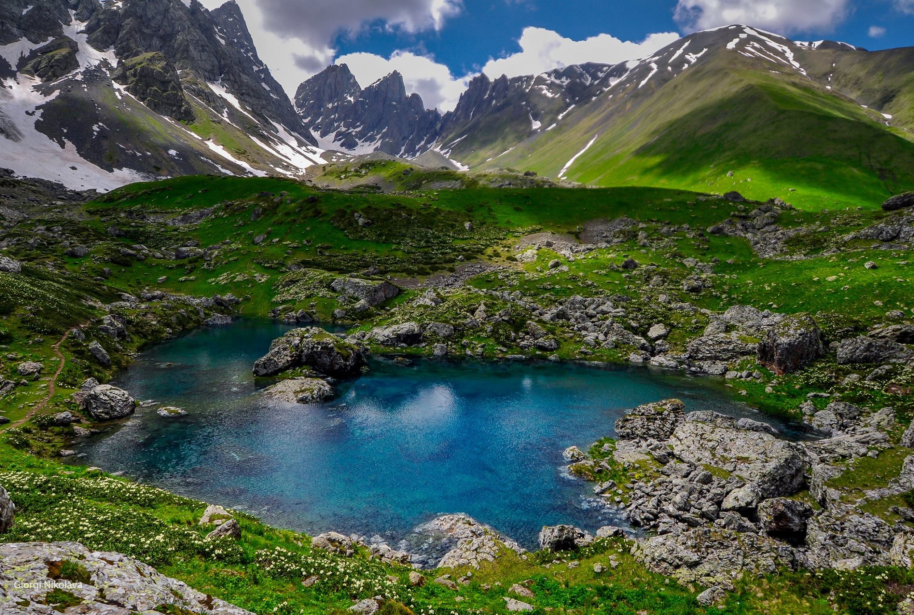dfdsfds
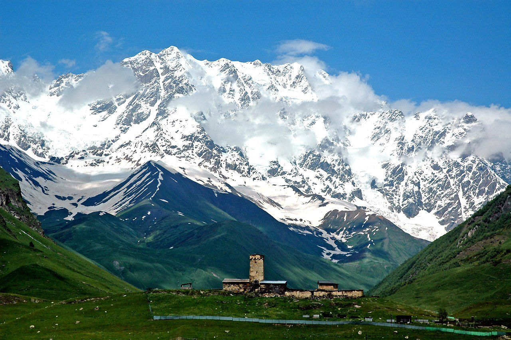dfdsfds

uZiro tba

შაორის ტბა
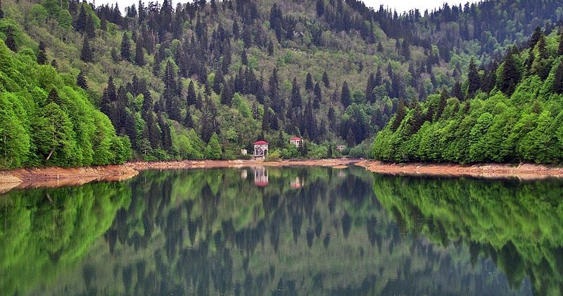kurorti shovi
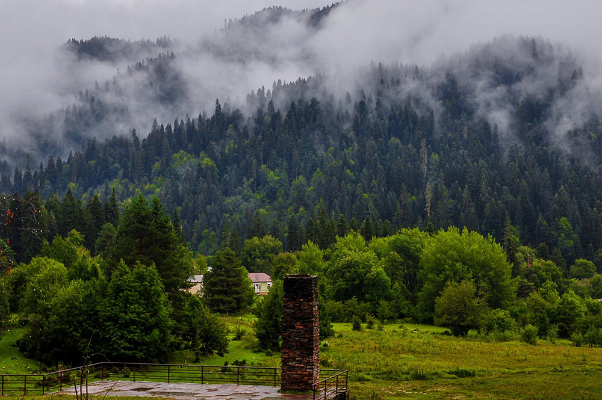gona rachuli shveicaria
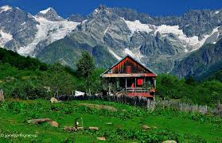mestia

ushgyli
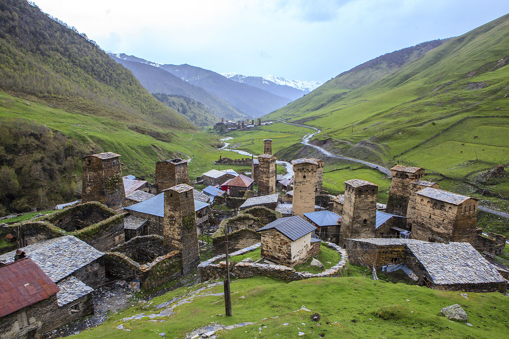dfdsfds
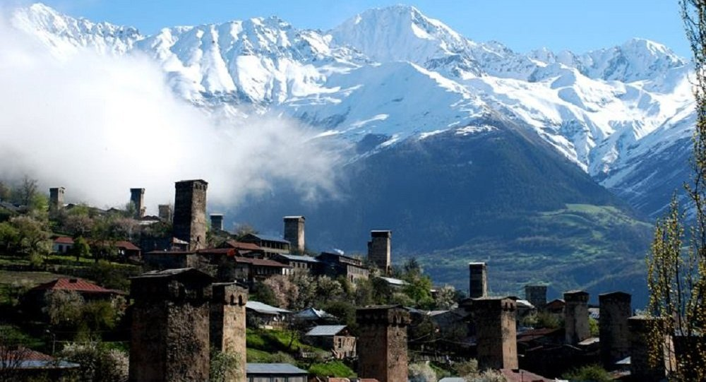dfdsfds
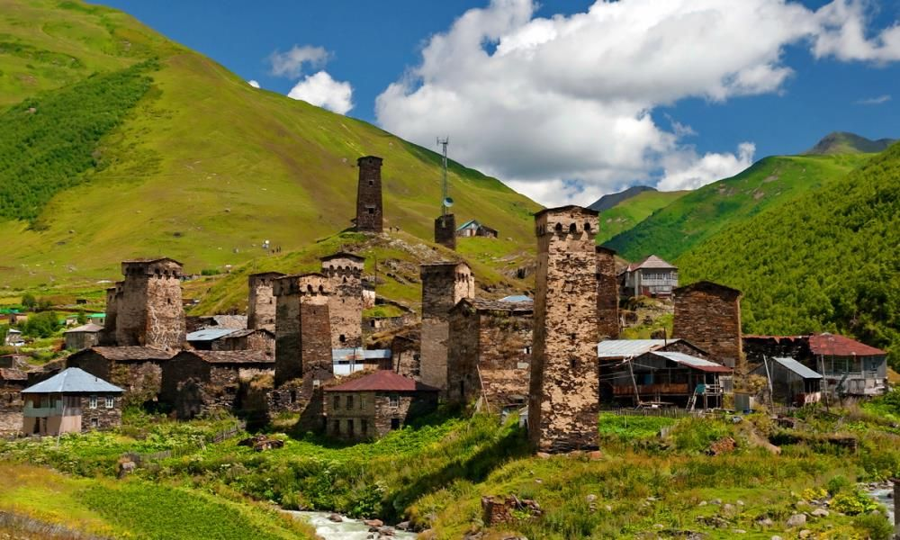dfdsfds
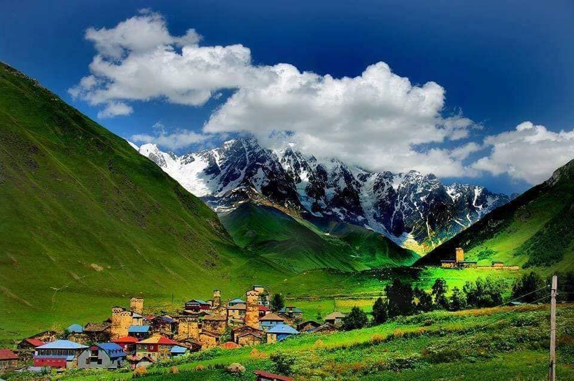თუკი კახეთში არ სვი მანავი ქართლში ურმული თუ არ გსმენია, თუ არ მოგხიბლა იმერეთის ცამ, და ან სვანეთის კლდეთა გენიამ... თუ აჭარაში არ გყავს ძმაკაცი, გურიის მთებში თუ არ გივლია, არ გიტირია სამეგრელოში, ბროწეულები როცა ტირიან... თუ თბილისელი ქალები ეშხმა გული ბოლომდე არ გადახია, მაშინ ყოფილხარ საქართველოში და საქართველო არ გინახია....